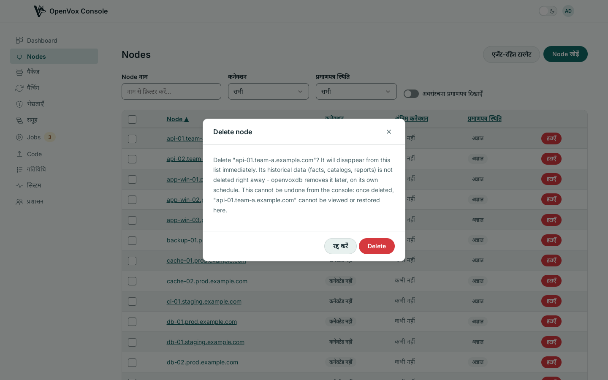

Nodes
किसी Node को हटाएँ
कंसोल से किसी Node को हटाइए — इससे openvoxdb और CA में क्या होता है, और क्या बना रहता है।
किसी Node को हटाएँ
Nodes पृष्ठ पर Node के लिए हटाएँ चुनिए, और पुष्टि कीजिए। इसके लिए ऐसी भूमिका पर nodes:manage अनुमति चाहिए जिसके Node समूहों में वह Node शामिल हो।


हटाना एक साथ दो काम करता है:
- यह openvoxdb में Node को निष्क्रिय करता है, ताकि वह फ़्लीट में फिर न दिखे;
- यह CA से Node का प्रमाणपत्र साफ़ करता है, ठीक साफ़ करें कार्रवाई की तरह, ताकि वह certname फिर कभी प्रमाणित न हो सके और नए सिरे से नामांकित होने के लिए मुक्त हो।
Node के पृष्ठ से ग़ायब होने के लिए दोनों हिस्से ज़रूरी हैं, क्योंकि पृष्ठ openvoxdb को ज्ञात Nodes और CA को ज्ञात Nodes, दोनों को सूचीबद्ध करता है। यदि कंसोल के पास certificate-admin क्रेडेंशियल नहीं है, तो केवल openvoxdb वाला हिस्सा होता है, और Node अपने प्रमाणपत्र के कारण दिखता रह सकता है।
जिस मशीन को आप सेवा से हटा रहे हैं, उसे हटाने से पहले उसका node agent और Puppet agent रोक दीजिए, या हटा दीजिए, ताकि वह फिर से रिपोर्ट या कनेक्ट न करे।
हटाना क्या नहीं करता
- यह Node का इतिहास तुरंत नहीं मिटाता। उसके Facts, catalogs और Reports openvoxdb में तब तक रहते हैं जब तक openvoxdb का अपना garbage collection उन्हें अपने समय पर हटा नहीं देता।
- हटाए गए Nodes की कोई सूची नहीं है। openvoxdb निष्क्रिय किए गए Nodes को हर सूची से बाहर रखता है, और कंसोल कोई अलग रिकॉर्ड नहीं रखता, इसलिए हटाया गया Node कंसोल के पृष्ठों से ग़ायब हो जाता है।
किसी Node को वापस लाएँ
हटाए गए Node का प्रमाणपत्र साफ़ किया जा चुका होता है, इसलिए उसे वापस लाना नया Node जोड़ने जैसा ही है: उस पर इंस्टॉल स्क्रिप्ट फिर से चलाइए, और उसके नए अनुरोध पर हस्ताक्षर कीजिए। देखें Nodes जोड़ें।